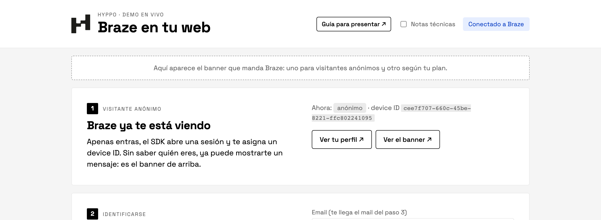
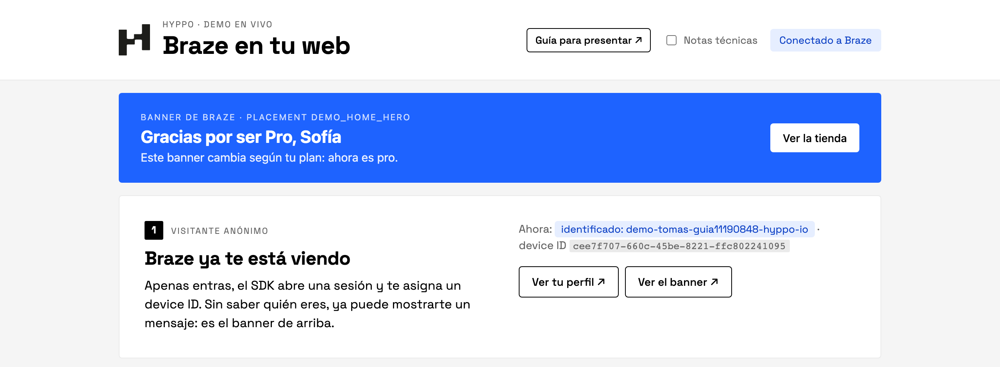
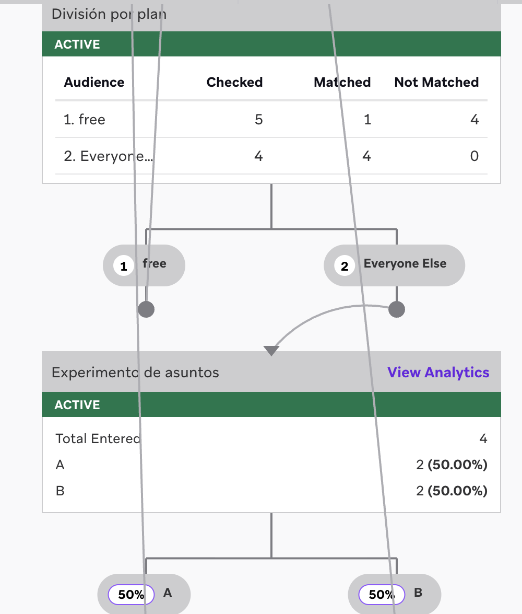
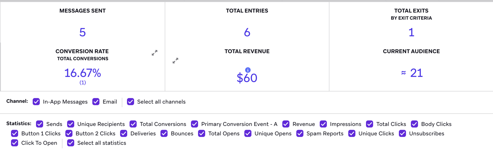
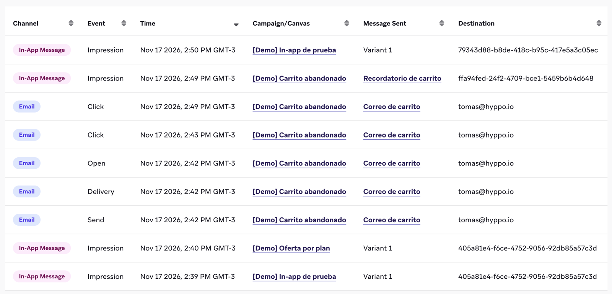
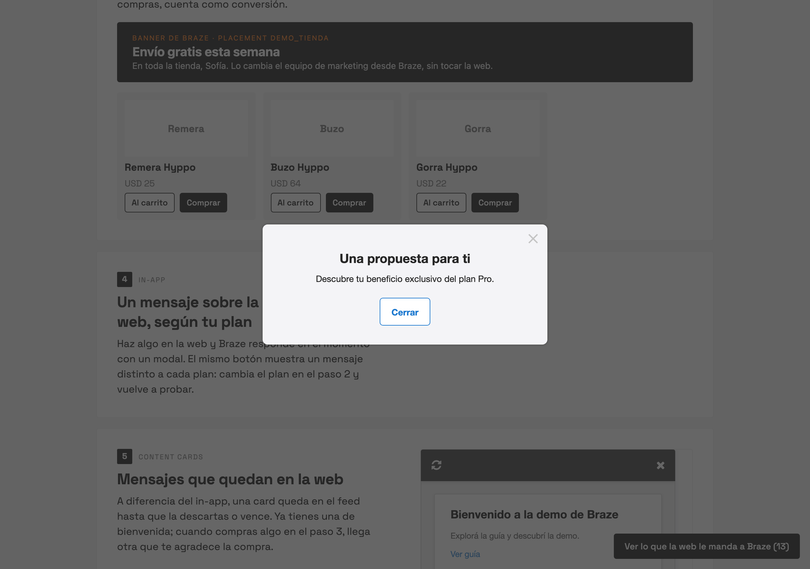
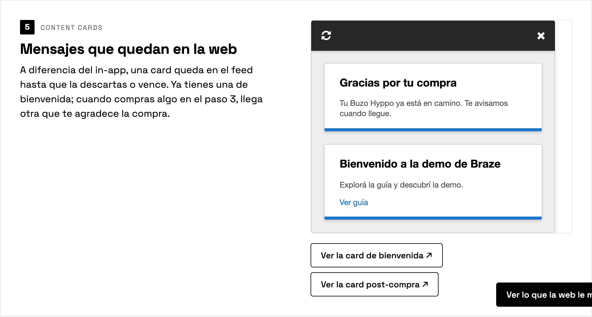

Antes de la reunión
- La demo cuenta la misma historia que la de Customer.io: usá "Sofía" como nombre y un plan (free, pro o enterprise).
- Abrí la demo en el navegador que vas a compartir y bajá el bloqueador de anuncios para el sitio (Brave Shields, uBlock). Si está activo, arriba a la derecha dice "Bloqueado".
- Hacé el recorrido una vez con tu email. Así ves que estén activas las campañas y el Canvas (los links "↗" de cada paso).
- Abrí el panel de abajo a la derecha y tocá Empezar de nuevo para arrancar la reunión como visitante anónimo.
- Dejá Braze abierto y logueado en otra pestaña, en el workspace HYPPO: los links "↗" abren ahí.
- Para mostrar el Event User Log con el JSON crudo, tu perfil tiene que estar en el Internal Group Demo Hyppo (Settings → Internal Groups). Se suma desde el perfil con "Add As Test User".
- Tené a mano tu casilla de email para el paso 3. El remitente del sandbox cae en Promociones de Gmail.
La demo usa el sandbox de partner "HYPPO" (EU-02). Todo lo que pase en la reunión queda ahí, con perfiles demo-….
Paso 1 · Visitante anónimo
"Braze te reconoce antes de saber quién sos"

- Qué decir
- Apenas alguien entra a la web, Braze le asigna un device ID y ya puede mostrarle mensajes. El banner de arriba lo ve cualquier visitante, sin login. No se pierde nada de lo que pasa antes del registro.
- Qué hacer
- Señalá el banner. Para mostrar lo técnico, abrí el panel con el botón de abajo a la derecha: la sesión y el pedido de banners ya salieron.
- Qué mostrar en Braze
- "Ver tu perfil ↗": el perfil anónimo, con sesiones, navegador y país, sin external ID. "Ver el banner ↗": la campaña de Banner y su placement.
Paso 2 · Identificarse
"Cuando se registra, el mensaje cambia solo"


- Qué decir
- Al loguearse, todo lo que hizo como anónimo pasa a su perfil. El banner se arma con sus datos: si cambia el plan, cambia el mensaje. El contenido lo decide el dato, no el desarrollador.
- Qué hacer
- Completá email, nombre y plan y tocá "Identificarme". En unos 20 segundos el banner cambia por el del plan: es lo que tarda Braze en guardar el dato. Mientras, mostrá el perfil.
- Qué mostrar en Braze
- "Ver tu perfil ↗" del paso 1: ahora es el perfil identificado, con el email, el nombre y el atributo custom
plan, y la actividad de antes de identificarse.
Paso 3 · Carrito abandonado → email → web
"La orquestación: un email distinto para cada cliente, que trae ventas y se puede medir"

- Qué decir
- Si alguien deja algo en el carrito, Braze lo sigue: a los 2 minutos (en producción sería una hora) le deja un mensaje en la web y le manda un email. El email depende del plan: a un free le ofrece pasar a Pro; a un pro o enterprise le llega con uno de dos asuntos, en un test A/B que dice cuál vende más. El botón del email vuelve a la web reconociendo a la persona, y si compra, sale del Canvas y cuenta como conversión.
- Qué hacer
- "Al carrito" en un producto y no lo compres. Mientras esperás, abrí el Canvas. Cuando llegue el email ("Tu carrito te espera"), tocá "Volver a tu carrito": la demo te identifica y destaca el producto. Compralo. Para mostrar las dos ramas, repetí con otro plan y otro email (
nombre+free@…ynombre+pro@…llegan a la misma casilla como dos perfiles). - Qué mostrar en Braze
- "Ver el Canvas ↗": entrada por evento, espera, in-app, la división por plan y el experimento; después, las métricas: entradas, emails, clics, conversión e ingresos. En el perfil, el historial de mensajes muestra todo el recorrido.


Paso 4 · In-app
"Responder en el momento, dentro de la web"

- Qué decir
- Cualquier evento de la web puede disparar un mensaje en pantalla, sin tocar código: el marketing lo arma en Braze. Y el mismo botón le muestra algo distinto a cada plan.
- Qué hacer
- "Disparar el in-app": aparece el modal del plan. Para mostrar la segmentación, cambiá el plan en el paso 2, identificate de nuevo y repetí (el SDK espera 30 segundos entre dos in-app).
- Qué mostrar en Braze
- "Ver la campaña ↗": el trigger por evento, el Liquid que elige el texto y las impresiones y clics, que se suman en el momento.
Paso 5 · Content Cards
"Mensajes que no se pierden"

- Qué decir
- Un in-app se ve una vez; una Content Card queda en la web, como una bandeja de entrada, hasta que la persona la descarta o vence. Sirve para bienvenidas, beneficios o seguimiento de una compra.
- Qué hacer
- Mostrá la card de bienvenida. Después de comprar en el paso 3, en unos 20 segundos aparece la que agradece la compra con el producto.
- Qué mostrar en Braze
- "Ver la card de bienvenida ↗" y "Ver la card post-compra ↗": una para todos, la otra disparada por la compra.
Para cerrar
- Bloqueadores de anuncios: los usuarios con bloqueador no llegan a Braze desde la web. Los eventos clave (compras, altas) conviene mandarlos también desde el backend con la REST API.
- SDK Authentication: en producción, el backend firma un JWT por usuario para que nadie se haga pasar por otro.
- Más canales: email, push, WhatsApp, SMS, Banners y Content Cards se orquestan desde el mismo Canvas.
Si algo no aparece
- "Bloqueado" arriba a la derecha: bajá el bloqueador de anuncios y recargá.
- El in-app no llega: una campaña recién lanzada aparece en la sesión siguiente; y si el modal sale con el texto por default, Braze todavía no guardó el plan: esperá unos segundos y repetí.
- El banner no cambia al identificarse: la demo lo vuelve a pedir a los 15 y a los 30 segundos. El SDK permite 5 pedidos por sesión: si te identificaste varias veces, "Empezar de nuevo".
- La card de la compra no aparece: tarda unos 20 segundos; la demo vuelve a pedir el feed a los 15 y a los 30.
- El email no llega: buscalo en Promociones o en spam. Si compraste antes de los 2 minutos, saliste del Canvas y no se manda.